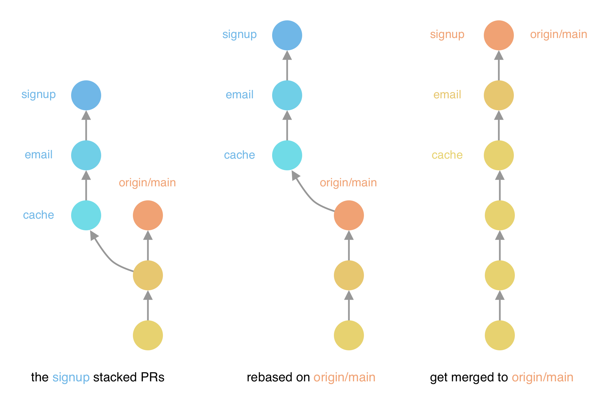
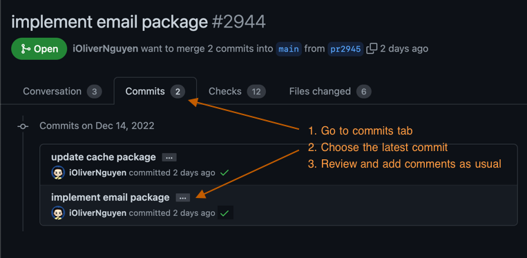

My first impressions of Sapling — Meta’s new Git client
Sapling is a new source control system developed by Meta. Recently, it gains the ability to work with GitHub. I’m curious about how it works, so I decided to give it a try and end up using it daily on my company’s repositories. If you want to try it out, check their documentation here.
Stacked PRs

When developing, I usually create a single commit for each PR and stack them together.
To give an example, let’s say we are developing the sign-up feature: user inputs their email address, password, and we send them a nice welcome email. From the backend perspective, we need to create a new user, verify that the user doesn’t exist, and send the email. We need to touch the implementation of the cache package, add an email package, then finally implement the sign-up logic. This can be represented as a stack of PRs:
- Update the cache package to add a new method.
- Add the email sending system. It uses the cache package to prevent sending duplicated emails.
- Implement the sign-up logic. It depends on the two changes above.
The benefit: This help reviewers with separation of concern. Smaller, isolated changes are easier to be reviewed. They can check the PRs one by one, with each PR containing independent logic. Of course, the email system still requires the cache package to be updated, but we can still review the email system in isolation.
When the origin gets updated, we’ll pull the changes and rebase the PRs on top of the origin, push the changes, get reviewed, and merge.
The downside: It requires discipline to keep the PRs small and isolated. Usually, while developing the upper PRs, we need to make some changes in the lower PRs. This can be annoying since we have to keep track of what changes in what PR, or constantly switch between PRs to make changes, then rebase the upper ones.
git checkout mybranch/signup # checkout sign up branch
vim features/signup/signup.go # make changes to signup
vim lib/email/email.go # make changes to email package
git add features/signup # commit the signup changes
git commit --amend
git stash # stash the email changes
git checkout mybranch/email # checkout email branch
git stash pop # apply the email changes
git add lib/email # commit the email changes
git commit --amend
git checkout mybranch/signup # checkout sign up branch again
git rebase mybranch/email # rebase the signup branch on top of email branch
Too much switching, and too many commands to type. It’s not fun.
Enter sapling
Sapling is a new git client. It encourages the use of stacked PR. It will automatically rebase the PRs on top of each other, so we don’t have to do it manually.
Given the following commit structure, presented by calling the sl command:
sl
@ 00f1749f6 30 minutes ago oliver
│ implement user signup
│
@ e0dbbc80e 50 minutes ago oliver
│ implement email package
│
o 4f6928029 Yesterday at oliver
╭─╯ update cache package
│
o 876f46044 Today at 07:45 remote/main
The workflow with sapling will be:
sl goto 00f1749f6 # checkout the sign up code
vim features/signup/signup.go # make changes to signup
vim lib/email/email.go # make changes to email package
sl absorb # magic 👻
With only a single command sl absorb, sapling will:
- Amend the
email.gochanges to the signup commit. - Amend the
signup.gochanges to the signup commit. - Rebase the signup commit on top of the email commit.
Your changes will be absorbed into the PRs, and the PRs will be rebased on top of each other. You don’t have to do it manually as before. With only a single command. Well done! 👻
My experience with sapling
The first problem comes from our use of direnv. We use git rev-parse --show-toplevel to get the root of our repository. And of course, it won’t work with sapling. Read more about it in my post: Make sapling work with direnv. Some other issues including IDE and GUI won’t work with sapling (yet). But I’m getting used to it quickly.
So I’m using sapling for a few weeks now. And the overall experience is great.
Commonly used commands
View repository status:
sl: show the commit-graph (or smart-log)sl status: show the status of the current branch
Moving between commits:
sl goto <commit>: checkout the commit.sl next,sl prev: checkout the next/previous commit.
Working with commits:
sl add,sl remove,sl forget: add/remove/untrack files.sl commit: commit the changes as a new commit.sl metaedit: edit the commit message.sl absorb: absorb the changes into the PRs, and rebase the PRs on top of each other.sl rebase: rebase the PRs on top of each other.
While git add adds all changes to the staging area, including new files, deleted files; the corresponding command sl add will only add new files to the staging area. To remove files, we must use sl remove. This will be a bit annoying when committing vendor files, since we have to list all deleted files to remove them. I’m not sure if there is a better way:
$ sl status
? vendor/github.com/sample/cache/v2/caching.go
? vendor/github.com/sample/cache/v2/stripe.go
! vendor/github.com/sample/cache/v2/deprecated.go
! vendor/github.com/sample/cache/v2/formatter.go
$ sl add vendor
A vendor/github.com/sample/cache/v2/caching.go
A vendor/github.com/sample/cache/v2/stripe.go
! vendor/github.com/sample/cache/v2/deprecated.go
! vendor/github.com/sample/cache/v2/formatter.go
# Have to list all deleted files to remove, is there a better way? 😞
$ sl remove vendor/github.com/sample/cache/v2/deprecated.go \
vendor/github.com/sample/cache/v2/formatter.go
A vendor/github.com/sample/cache/v2/caching.go
A vendor/github.com/sample/cache/v2/stripe.go
R vendor/github.com/sample/cache/v2/deprecated.go
R vendor/github.com/sample/cache/v2/formatter.go
We can not use sl remove vendor/github.com/sample/cache/v2 here because it will happily remove all new/changed files too. I have to list all removed files to remove them from sapling.
Pushing PRs to GitHub
Sapling provides 2 ways of pushing PRs to GitHub: sl pr and sl ghstack. Each has different trade-offs. I prefer using the sl pr command:
- It creates a PR for each commit.
- It pushes the PRs to GitHub in the order of the commits.
- It’s easier to understand as commits stacks nicely on each other.
- It works well and can be reviewed with GitHub’s UI.
- Another benefit, it does not require write permission to the repository, in case you are doing a fork.
The sl ghstack command creates a more complex web of PRs. And there are a lot of times when it fails to push the PRs. Try again won’t work. No available fixes. Have to duplicate these PRs again and risk spamming my company repositories. I don’t recommend it.
Reviewing PRs

Sapling recommends using reviewstack for reviewing. But I find it slow, less responsive, and sometimes gives wrong file changes. I prefer using GitHub’s UI. When pushing PRs with sl pr, it creates a single commit for each PR. So the reviewer can open the latest commit, and review the changes. Just one more extra click compared to the usual review flow:
- Go to Commits tab.
- Choose the latest commit.
- Review and add comments. These comments will appear on the PR as usual.
Other things
It requires cloning a new repository, so you can’t use your familiar git commands. It won’t work with your existing tools, IDE, etc. You have to use the sl web UI to view changes.
Give it a try!
Sapling is great. While there are a few troubles, and it requires a small learning curve, it pays back in the end. Stacking, pushing and reviewing PRs is much easier. Give it a try!
Author
I'm Oliver Nguyen. A software maker working mostly in Go and JavaScript. I enjoy learning and seeing a better version of myself each day. Occasionally spin off new open source projects. Share knowledge and thoughts during my journey. Connect with me on , , , and .